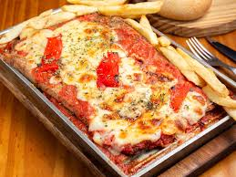

Matambre a la Pizza

Description
Matambre a la Pizza is a fun Argentinian grilled steak appetizer that will be the star of your next summer cookout
Whether you serve it as an appetizer or dinner, this flank steak pizza is a guaranteed winner!
Ingredients
For the steak
- 1kg of steak
- Salt and pepper
- 1 c milk
For the sauce
- 1 spoon olive oils
- 1 small onion, minced
- 1 large clove garlic, minced
- 1 (28 oz) can crushed tomatoes
- 1 spoon oregano
- 1 spoon paprika
- 1/4 spoon crushed red pepper flakes
- 1 spoon salt
Putting it all together
- 4 oz mozzarella cheese
- 1-2 small tomatoes, sliced
- Roasted red pepper
- Sliced deli ham
- Green olives
- Oregano
Steps
- Place the pounded steak into a large baking dish. Season the steak with salt and pepper and cover it with milk. (Add a little extra milk if the steak is not completely covered.)
- Cover the dish and refrigerate for 8-12 hours.
- Heat the oil in a medium saucepan over medium-high heat. Add the minced onion and garlic, and saute until softened, about 5 minutes.
- Reduce the heat to medium and add the tomatoes, oregano, paprika, chile flakes, and salt. Bring the sauce to a simmer. Cook, stirring occasionally, until the sauce has thickened, 10-12 minutes.
- Remove the marinating meat from the refrigerator 1 hour before you want to grill it, to let it come to room temperature.
- Preheat grill to a medium-high heat.
- Drain the milk from the steak, discarding the milk. Pat the steak dry.
- Place the steak on your preheated grill and grill the first side for 5-7 minutes, uncovered.
- Flip the flank steak.
- Spread the cooked side with your prepared pizza sauce. Spread the mozzarella cheese over the sauce, and top with the tomatoes (and other toppings if desired).
- Cover the grill and cook for an additional 3-5 minutes, until the steak is done and the cheese has melted.
- Remove the steak from the grill and let it stand for 5 minutes before slicing, to let the juices settle.
- Garnish the matambre a la pizza with oregano to serve (if desired). Serve with roasted (or grilled) potatoes and grilled bread.